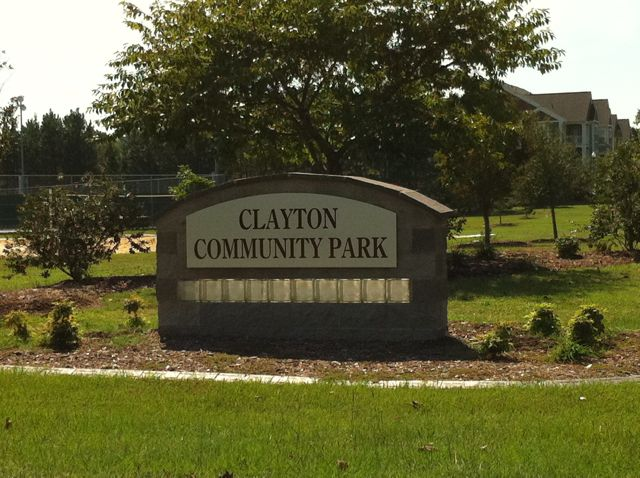

Clayton Community Park is a welcoming outdoor space in Clayton, offering a place to relax, walk, and enjoy the outdoors.
Located at 1075 Amelia Church Road, the park features scenic trails, family-friendly amenities, and open areas for recreation.
It is a great destination for picnics, playtime, and community gatherings.
The park offers a variety of amenities for visitors to enjoy. The paved trail is perfect for walking, jogging, or biking, while the playground equipment provides fun for children of all ages.
Picnic areas with grills are available for family gatherings and social events. Restrooms are conveniently located throughout the park, and multiple large parking lots ensure easy access for all visitors.
The park is continuously maintained and expanded to meet the needs of the community.
Clayton Community Park is more than just a recreational area; it is a hub for community engagement. The park hosts various events and activities throughout the year, fostering a sense of community and connection among residents.
Local organizations and groups often utilize the park for events, promoting social interaction and community spirit.
Visitors are encouraged to participate in community events and contribute to the park's ongoing development and maintenance.